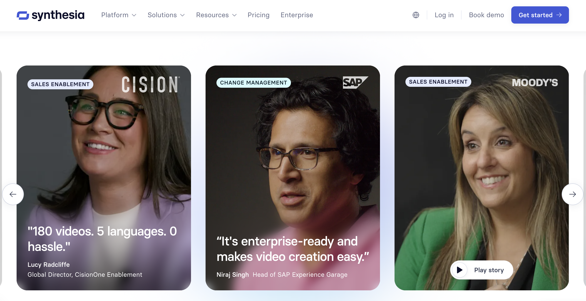

Generating video content with AI presenters has become a standard strategy to scale content production. While Synthesia excels at corporate training slideshows, personal brands and media agencies need more custom cloning features. Here are the five best Synthesia alternatives ranked honestly.
In content marketing, engagement depends on human relation. Synthesia's stock avatars have standard robotic movements that can look sterile or uncanny when used for social media campaigns.

VidCloner is an AI-powered viral video cloning tool used by 8,000+ creators. The workflow is simple: copy the URL of any TikTok or short-form viral video, paste it into VidCloner, select your avatar, and the AI generates a clone with your face replacing the original actor. Two modes are available — Clone (replace the actor in any existing video) and Remake (recreate viral formats with your avatar).
With flat-rate plans starting at $19/month (5 credits/month), it is the most accessible self-serve option for creators who want to ride trending formats without filming anything.
HeyGen is a popular AI video generator focused on e-commerce product ads and stock presenters. It offers over 100 stock AI characters and simple link-to-ad features, making it popular for rapid marketing variant generation.
HeyGen operates on a credit-based subscription that can quickly become expensive for high-volume content creators. HeyGen is also script-based — you write text and a stock presenter reads it. VidCloner's Clone workflow lets you skip scripting entirely: paste a viral video URL and your avatar replaces the actor.
Colossyan Creator is built for corporate teams and instructional designers. It focuses on PDF-to-video generation, built-in quizzes, and localized avatar voiceovers for customer training environments.
Colossyan is highly tailored for corporate training decks rather than high-impact social media creatives. If you are looking to build a personal brand or drive viral social views, VidCloner's gesture-accurate custom avatars are far more realistic and engaging.
Elai allows users to turn written blog posts or URLs directly into talking-avatar videos. It offers a library of digital avatars and standard text-to-speech layouts designed for content marketing teams.
Elai's stock models lack the advanced gesture-tracking and emotional voice inflections that VidCloner provides. For creators wanting an authentic, realistic virtual double, Elai can feel too rigid and automated.
D-ID uses AI model generation to animate static portrait photos into talking videos. It is popular for lightweight chatbot integrations, virtual assistants, and profile photo animations.
D-ID is excellent for simple photo animations, but it cannot match the high-definition body gestures and movement replication of VidCloner. D-ID is not suitable for generating high-converting social media ads or personal brand clips.
| Rank | Tool | Best for | Pricing from |
|---|---|---|---|
| 1 | VidCloner | Personal brand cloning & high-fidelity gestures | $19/month (Free credits available) |
| 2 | HeyGen | Marketing avatars & text-to-video ads | $29/month |
| 3 | Colossyan | Corporate training & interactive quizzes | $35/month |
| 4 | Elai.io | Automated article-to-video conversion | $23/month |
| 5 | D-ID | Animated profile photos & conversational AI | $5.90/month |

Paste any viral TikTok URL, pick your avatar, and post it under your own account — used by 8,000+ creators.
Clone Your Video Free